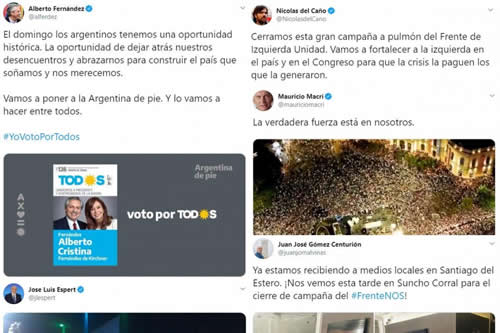

Real Chubut - Agencia de Noticias


Elecciones 2019: los últimos tuits de los candidatos antes de la veda

Minutos antes del arranque de la veda electoral , que puso fin a las declaraciones proselitistas, los candidatos a presidentes y vice se expresaron en las redes sociales. Los dirigentes podrán volver a pronunciarse el domingo cuando cierren los comicios.
El candidato a presidente por el Frente de Todos, Alberto Fernández, compartió minutos antes de las 8, su último mensaje. “El domingo los argentinos tenemos una oportunidad histórica. La oportunidad de dejar atrás nuestros desencuentros y abrazarnos para construir el país que soñamos y nos merecemos”, tuiteó el candidato que prometió “poner a la Argentina de pie”.
El domingo los argentinos tenemos una oportunidad histórica. La oportunidad de dejar atrás nuestros desencuentros y abrazarnos para construir el país que soñamos y nos merecemos.
— Alberto Fernández (@alferdez) 25 de octubre de 2019
Vamos a poner a la Argentina de pie. Y lo vamos a hacer entre todos.#YoVotoPorTodos pic.twitter.com/oo5s4Aaw8R
El texto fue acompañado por la imagen de la boleta, que corresponde a la lista 136, y en donde se puede ver la foto de Fernández junto a su compañera de fórmula, Cristina Fernández de Kirchner. El hashtag #YoVotoPorTodos se viralizó entre los partidarios del Frente de Todos y pasó a ser trending topic esta mañana.
Por su parte, el presidente Mauricio Macri no publicó nada en su cuenta esta mañana. El último posteo corresponde a ayer por la noche cuando compartió un video con imágenes de las marchas denominadas “Sí, se puede”. “Nos despertamos queridos argentinos, y empezamos a levantar la voz”, se escucha en off la voz de Macri.
Roberto Lavagna, candidato a presidente por Consenso Federal, también tuiteó esta mañana, minutos antes de las 8. En su último posteo antes de que empiece a regir la veda electoral, Lavagna prefirió llamar a votar por el candidato de su espacio pero a gobernador bonaerense. “Les quiero pedir muy especialmente el voto por un gran candidato. Eduardo Bali Bucca es un auténtico bonaerense que tiene toda la vocación y toda la preparación para gobernar esa gran provincia”, dice Lavagna en un breve video.La verdadera fuerza está en nosotros. pic.twitter.com/3eCQo0THZq
— Mauricio Macri (@mauriciomacri) 25 de octubre de 2019
El candidato a presidente por el FIT Unidad también compartió un posteo antes de las 8. “Cerramos esta gran campaña a pulmón del Frente de Izquierda Unidad. Vamos a fortalecer a la izquierda en el país y en el Congreso para que la crisis la paguen los que la generaron”, tuiteó Del Caño.Eduardo Bali Bucca es uno de los grandes candidatos de #ConsensoFederal. Desafió la polarización con sensibilidad y programas para la grave situación de la niñez en la Prov de Buenos Aires. Bali ya se ha ganado un lugar entre los jóvenes políticos con enorme futuro de Argentina. pic.twitter.com/CoDoRvMur3
— Roberto Lavagna (@RLavagna) 25 de octubre de 2019
Cerramos esta gran campaña a pulmón del Frente de Izquierda Unidad. Vamos a fortalecer a la izquierda en el país y en el Congreso para que la crisis la paguen los que la generaron.
— Nicolas del Caño (@NicolasdelCano) 25 de octubre de 2019
Los candidatos a presidentes José Luis Espert, por el Frente Despertar, y Juan José Gómez Centurión, por el Frente Nos, no compartieron nada en sus redes sociales esta mañana. Sus últimos posteos, antes de la veda, refieren en cada a los cierres de campaña.
Espert compartió fotos y videos de la #EspertFest, como llamó al evento con el que puso fin a su campaña electoral y que se realizó en un salón de Palermo.
Centurión subió videos y la transmisión en vivo para poder revivir su cierre de campaña en Suncho Corral, Santiago del Estero.Selfie time Cierre de Campaña #EspertFest pic.twitter.com/FF2zBUVC7H
— Jose Luis Espert (@jlespert) 25 de octubre de 2019
Ya estamos recibiendo a medios locales en Santiago del Estero. ¡Nos vemos esta tarde en Suncho Corral para el cierre de campaña del #FrenteNOS! pic.twitter.com/WyaTCILdPE
— Juan José Gómez Centurión (@juanjomalvinas) 24 de octubre de 2019
Fuente: Página 12